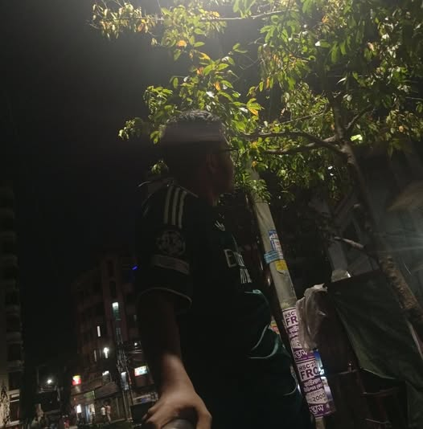

STUDENT · BUILDER · CURIOUS MIND
Hello, world. I'm
Ishrak
Hasan.
A student exploring the intersection of technology, creativity, and problem-solving. I learn by building, breaking, and making things better.

ISHRAK HASAN
STUDENT · BUILDER
CuriosityAlways switched on
In progressBecoming better daily
23°27' N / 91°10' E
DESIGN ✳ CODE ✳ EXPLORE ✳ LEARN ✳ CREATE ✳ REPEAT ✳ DESIGN ✳ CODE ✳ EXPLORE ✳ LEARN ✳ CREATE ✳ REPEAT ✳
01 / A QUICK INTRONot just a name.
More about me ↗Not just a name.
A work in progress.
I'm an HSC candidate with a growing interest in computer science and the wider world of technology. From writing code and experimenting with Linux to exploring AI and cybersecurity, I enjoy turning curiosity into practical skills.
01MINDSET
Stay curious. Keep questioning.
∞LEARNING
There is always something new to discover.
02 / WHAT I'M INTO
All interests ↗Areas of exploration.
A PERSONAL PRINCIPLE
“The goal isn't to know everything. It's to never stop getting better.”— A reminder to myself